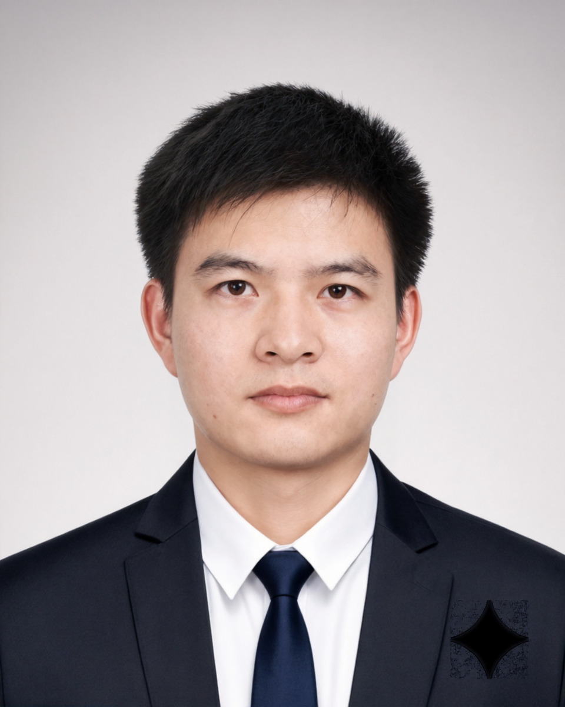

College of Sciences · National University of Defense Technology (NUDT) · Changsha, Hunan, China
Emailtingjinluo@hotmail.com, luotingjin03@nudt.edu.cn
Join the Group · 招生信息
There are open research positions in my group at all levels — Postdoc, research assistant, Ph.D. student, and master student. If you are interested, please send me an e-mail containing your CV, score sheet, certificates, and representative publications.
I am also recruiting self-motivated undergraduate students (mainly @NUDT) for research training. Please read the points below carefully before sending me an e-mail.
1Research Interests · 研究兴趣
I mainly study how to design advanced machine learning algorithms using mathematical tools, applied to computer vision, data mining, and other fields. Recent interests include weakly-supervised learning (semi-supervised learning, label-noise robust learning, partial-label learning, etc.), interactive machine learning (curriculum learning, Class Incremental Learning, Reinforcement Learning), and multi-modal large-model safety and robustness. 主要研究如何使用数学工具设计先进机器学习算法，并广泛应用于计算机视觉、数据挖掘等领域。近期研究兴趣包括弱监督学习（如半监督学习、标签噪声鲁棒学习、偏标记学习、多标签学习等）、长尾数据计算、大模型安全可信等。
2Admission Expectations · 招生期望
I prefer students with solid mathematical foundations, strong programming skills, and good English abilities (speaking / reading / writing). Prior research experience (academic competitions, publications, extracurricular academic activities, etc.) is a plus. I also recommend taking the Machine Learning course by Hung-yi Lee (or at least one machine learning / pattern recognition / computer vision class) before starting your academic research. 希望招收数学基础好、编程能力强、英语功底扎实、擅于沟通表达的理工科类学生。有前期科研经历者加分（学术竞赛、论文发表、课外学术活动、企业工作实习经历等）。
3Training Objectives · 培养目标
Through research training, students are expected to (1) gain solid professional knowledge, rigorous scientific thinking, strong hands-on ability, a broad academic vision, and the scientific literacy to independently discover, think and solve problems. (2) Publish high-level, impactful papers in the top journals or conferences, and be self-motivated to continue academic research after graduation. 经过精心组织的科研训练，使学生具备扎实的专业知识、缜密的科研思维、较强的动手能力、广阔的学术视野，及独立发现问题、思考问题、解决问题的重要科学素养；在校期间在世界顶级期刊或会议上发表高水平、有影响力的论文，并有志于毕业后继续从事学术研究工作。
Research & Writing Resources
Semi-supervised, partial label, label-noise robust, and multi-label learning with theoretical guarantees.
Incomplete multi-view representation learning with graph neural networks and contrastive objectives.
Debiased scene graph generation via causal intervention and counterfactual training.
Interpreting and mitigating object hallucinations in large vision-language models via attention lens.
Membership · 学术组织
Associate Editor · 期刊编委
Conference Service · 会议服务
Area Chair / Senior PC
Program Committee / Reviewer
Journal Reviewer · 期刊审稿人